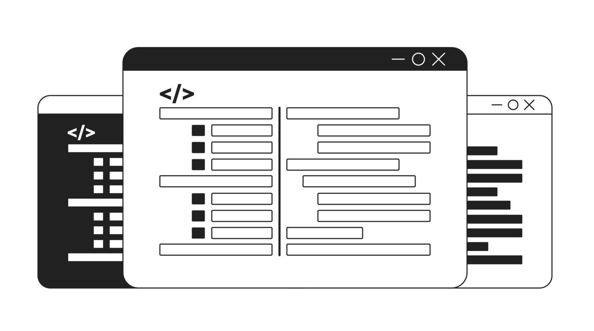

Welcome to My Personal Website!
Hi there! I'm Arjun Saseendran, a passionate and dedicated full-stack web developer with a keen eye for detail and a relentless drive to build impactful and innovative web applications. With a solid foundation in both front-end and back-end technologies, I strive to deliver seamless and engaging user experiences through well-crafted code and thoughtful design.
On this website, you'll find a showcase of my latest projects, a blog where I share insights and tutorials on various aspects of web development, and an in-depth look at my professional journey. Whether you're here to explore my portfolio, learn more about my skills and expertise, or connect with me for potential collaboration, I'm thrilled to have you!
Feel free to navigate through the different sections to get a better sense of my work and what I can bring to your next project. Thank you for visiting, and I hope you enjoy your stay!
Best regards,
Arjun Saseendran
Web Designing
As a seasoned web designer, I specialize in creating dynamic, user-centric websites that blend creativity with functionality. Whether you're launching a new venture or revitalizing your brand, I collaborate closely to deliver visually stunning and responsive websites that captivate audiences and drive results.
Web Development
From front-end aesthetics to back-end functionality, I bring expertise in HTML, CSS, JavaScript, and beyond to create responsive and efficient websites. With a commitment to innovation and precision, I strive to deliver seamless digital experiences that elevate client goals and engage audiences effectively.
Web App Maintenance
Ensuring the smooth operation and longevity of your web application is crucial for ongoing success. I provide comprehensive web app maintenance services, including performance optimization, security updates, bug fixes, and feature enhancements. With a proactive approach, I monitor and manage your web app.